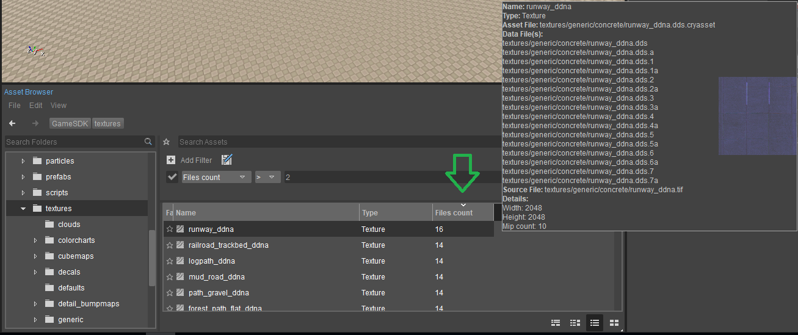

Обзор
В подробное представление Обозревателя активов можно добавить вычисляемый столбец.
static CItemModelAttribute filesCountAttribute("Files count", eAttributeType_Int, CItemModelAttribute::StartHidden);
CAssetManager* const pAssetManager = GetIEditor()->GetAssetManager();
pAssetManager->GetAssetModel()->AddComputedColumn(&filesCountAttribute, [](const CAsset* pAsset, const CItemModelAttribute* pAttribute, int role)
{
if (role == Qt::DisplayRole && pAsset)
{
return QVariant(pAsset->GetFilesCount());
}
return QVariant();
});После добавления столбец становится полностью функциональным как обычный столбец. Например, активы можно упорядочить и/или отфильтровать по значениям столбцов.
